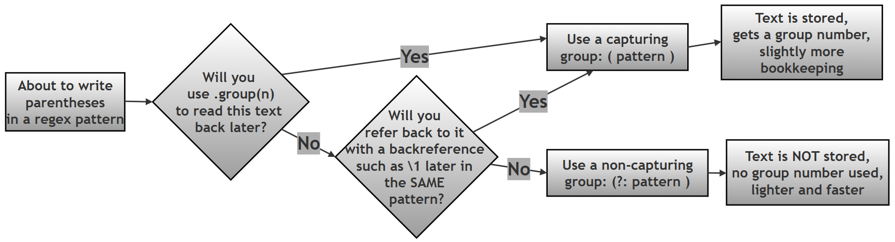

Capturing vs. Non-Capturing Groups in Python Regular Expressions¶
What this page contains, and why it matters¶
This page is a focused companion resource for Chapter 13 ("Regular Expressions") of the printed book Python Programming: Problem Solving, Packages and Libraries. It zooms in on one specific, easy-to-miss idea inside Python's re module: parentheses ( ) in a regex pattern can do two different jobs, and choosing the wrong one is a very common source of confusing bugs — patterns that "work" but return the wrong thing, or output that shifts unexpectedly when a pattern is edited.
By the end of this page you should be able to say, for any pair of parentheses in a pattern you write, why they are there — either to remember a piece of matched text for later (a capturing group), or purely to group things together for a quantifier or an alternation without remembering anything (a non-capturing group) — and to choose correctly between the two.
If you would like the wider companion resources for this chapter, see 10-ch13-re.md (eighteen worked example scripts, a primality-testing mini-project, a password validator, and a from-scratch regex engine) and 50-ch13-re-conceptual-qa.md (twenty-one short conceptual questions and answers) in this same folder.
A quick glossary (for reference while you read)¶
| Term | Plain-language meaning | Learn more |
|---|---|---|
| Regular expression (regex) | A text pattern that describes a shape of text to search for, rather than exact text | Python re docs |
| Capturing group | Part of a pattern wrapped in ( ) whose matched text Python remembers, so it can be retrieved later with .group(n) |
Python re — groups |
| Non-capturing group | Part of a pattern wrapped in (?: ) used only to group pieces together — nothing is remembered |
Python re — regex syntax |
| Backreference | A later part of the same pattern, written \1, \2, … (or (?P=name)), that means "match whatever group 1 (or name) already matched" |
Python re HOWTO — backreferences |
| Alternation | The \| symbol, meaning "either this or that" inside a pattern |
Python re — alternation |
| Quantifier | A symbol such as *, +, ?, or {m,n} that says how many times something can repeat |
Python re HOWTO — repeating things |
Word boundary (\b) |
A zero-width position between a "word" character and a "non-word" character (or the start/end of the string) | Python re — special sequences |
Table of contents¶
- What this page contains, and why it matters
- Why parentheses have two separate jobs in regex
- Capturing groups: a quick recap
- Non-capturing groups
- When should non-capturing groups be used?
- Common uses of non-capturing groups
- Performance benefits of non-capturing groups
- Avoiding unwanted backreferences
- Cleaner numbering of capturing groups
- Worked example: choosing which part of a match to capture
- Case study: removing duplicate words with a backreference
- Decision guide: capturing or non-capturing?
- Summary of changes made to this page
Why parentheses have two separate jobs in regex¶
We need to understand the difference between capturing and non-capturing groups, because parentheses ( ) in a regular expression quietly do two separate jobs, and it is easy to use them for one job while accidentally also triggering the other.
- Grouping — controlling precedence, repetition, and alternation. Just like parentheses in ordinary arithmetic (
2 * (3 + 4)), parentheses in a regex let you treat several characters as a single unit, so that a quantifier (*,+,{m,n}, …) or an alternation (|) applies to the whole group rather than to just the one character immediately next to it. - Capturing — storing the text that was matched inside the parentheses, so your code can retrieve it afterwards with
.group(n), or refer back to it later in the same pattern with a backreference such as\1.
You can combine these two jobs in two different ways:
- Grouping with capturing — ordinary parentheses
(pattern). This is what most beginners learn first, and it is what we have used throughout the earlier scripts on this chapter's companion pages. - Grouping without capturing — the subject of this page — using the special syntax
(?:pattern)instead of plain(pattern).
Capturing groups: a quick recap¶
A capturing group, written (pattern), does both jobs at once: it groups the enclosed pattern together, and it remembers whatever text that group matched, so you can pull it out afterwards with m.group(1), m.group(2), and so on (see 10-ch13-re.md and 50-ch13-re-conceptual-qa.md for worked examples of .group() in action). This is the syntax we have used up to this point, and it remains the right choice whenever you actually need the matched text back afterwards.
Non-capturing groups¶
A non-capturing group is a group that exists only for grouping — it plays no part in capturing text. Its syntax is:
(?:pattern)
The ?: immediately after the opening parenthesis is what tells Python's regex engine "group this, but don't bother remembering it." Unlike an ordinary capturing group (pattern), a non-capturing group (?:pattern):
- does not store the matched text,
- does not create a group number (so it never shifts the numbering of the real capturing groups elsewhere in the pattern — see Cleaner numbering of capturing groups below), and
- cannot be referred back to later using a backreference such as
\1, since there is nothing stored to refer back to.
When should non-capturing groups be used?¶
Reach for a non-capturing group whenever you find yourself writing parentheses purely to control grouping, precedence, or alternation — and you have no intention of ever calling .group(n) on that particular piece, or referring back to it with a backreference. In practice, that means non-capturing groups are the right tool when:
| You want to… | Because… |
|---|---|
| Avoid unwanted backreferences | A stray capturing group can silently be referred to by a later \1, \2, etc. that was meant for a different group |
| Skip storing matched text you will never use | Capturing text costs a small amount of memory and bookkeeping for no benefit if you never read it back |
| Group things purely for structure | Sometimes parentheses are needed only so a quantifier or \| applies to several characters at once |
| Keep group numbering clean | Every capturing group shifts the numbers of every capturing group that comes after it (see below) |
| Get slightly better performance | The regex engine does less bookkeeping when there is nothing to remember (see Performance benefits below) |
| Avoid confusion from "extra" groups | A pattern with fewer, more meaningful capturing groups is easier for the next person (including future you) to read |
Common uses of non-capturing groups¶
A. Grouping for repetition (quantifiers)¶
This is the single most common use of a non-capturing group. You often need to apply a quantifier — *, +, {m,n}, and so on — not to a single character, but to a whole sequence of characters treated as one unit. Ordinary parentheses would do this too, but since there is no need to capture the repeated text here, a non-capturing group is the cleaner choice.
# Step 1: Import re
import re
# Step 2: Set up the text to search
text = "ababab"
# Step 3: (?:ab)+ means "the two-character sequence 'ab', repeated
# one or more times". The (?:...) groups "ab" together purely so
# that the '+' quantifier applies to the WHOLE pair, not just to
# the 'b' immediately before it -- and since we don't need to pull
# "ab" back out afterwards, there is no reason to capture it.
pattern = re.findall(r"(?:ab)+", text)
print(pattern)
['ababab']
What this shows: (?:ab)+ matches the entire run "ababab" as one single match, because + repeats the whole group (?:ab) — not just its last character. No unwanted capturing occurs, because (?:...) never stores anything.
B. Grouping for alternation (OR)¶
A non-capturing group is also the natural choice when you want several alternatives, joined with |, to be treated as one logical unit — but you only care about which alternative matched, not about capturing it separately (since findall() already gives you the matched text directly). The script below shows the same alternation written both ways, so you can see exactly what changes.
# Step 1: Import re
import re
# Step 2: Set up the text to search — it contains three different
# animal words, plus one word ("bat") that should NOT match
text = "cat dog rat bat"
# Step 3: Non-capturing group (?:cat|dog|rat) groups the three
# alternatives together purely so '|' applies across all of them,
# without creating a separate capturing group. Because there is
# nothing to capture, findall() returns a plain list of the
# matched TEXT directly.
pattern1 = re.findall(r"(?:cat|dog|rat)", text)
print("Non-capturing ->", pattern1)
# Step 4: Now try the SAME alternation using an ordinary capturing
# group instead: (cat|dog|rat)
pattern2 = re.findall(r"(cat|dog|rat)", text)
print("Capturing ->", pattern2)
Non-capturing -> ['cat', 'dog', 'rat']
Capturing -> ['cat', 'dog', 'rat']
Note that with exactly one capturing group in the pattern,
findall()still returns a plain list of matched strings, identical to the non-capturing version above. Python's own documentation confirms thatfindall()only starts returning tuples once a pattern has two or more capturing groups (in which case each tuple holds one string per group). This is exactly the same "one group vs. many groups" rule already verified on the companion pages for this chapter — see Q14 on50-ch13-re-conceptual-qa.md.
So in this particular example, both versions happen to produce identical output — which is itself a useful thing to notice: the practical difference between capturing and non-capturing only shows up once you add a second group to the pattern, as the next few sections demonstrate.
Performance benefits of non-capturing groups¶
Every capturing group requires Python's regex engine to do a small amount of extra bookkeeping as it works through a pattern:
- Store the matched text for that group, so it is available afterwards.
- Track a group number for it, alongside every other capturing group in the pattern.
- Manage additional backtracking state, since the engine may need to remember and restore what a group had captured if it backtracks and retries a different path through the pattern.
A non-capturing group asks the engine to do none of this — it only needs to group the pattern together, with nothing to remember afterwards. This makes non-capturing groups:
- Lighter — less bookkeeping per group,
- Faster — especially noticeable in patterns with many repeated or nested groups, or when the same pattern is applied to a very large amount of text, and
- Easier to maintain — a reader immediately knows that a
(?:...)group is structural only, with no data to track down elsewhere in the code.
Avoiding unwanted backreferences¶
A capturing group you did not really need can cause more than just clutter — it can actively introduce bugs. Every capturing group:
- May confuse the next reader of the code, who has to work out whether
.group(2)in some other line is actually meaningful, or just an accidental group nobody uses. - May break group numbering — inserting or removing an unrelated pair of capturing parentheses shifts the numbers of every capturing group that follows it (see Cleaner numbering of capturing groups below).
- May cause bugs in
.group(n)access, if code elsewhere assumes a particular group number that has silently shifted.
The example below compares an "original" version that captures a title (Mr, Ms, or Dr) it does not actually need, against an improved version that uses a non-capturing group for the title instead.
# Step 1: Import re
import re
# Step 2: Set up the text to search
text = "Dr. John"
# Step 3: Original version -- captures the title as well as the name,
# even though the title is never actually used afterwards
pattern = re.search(r"(Mr|Ms|Dr)\. (\w+)", text)
print(pattern.groups())
# Step 4: Improved version -- (?:...) groups the title alternatives
# together for '|', WITHOUT capturing the title text, since only
# the name is actually needed
pattern = re.search(r"(?:Mr|Ms|Dr)\. (\w+)", text)
print(pattern.groups())
('Dr', 'John')
('John',)
Cleaner numbering of capturing groups¶
Unnecessary capturing groups do not just add clutter — they actively shift the numbers of every capturing group that comes after them, which makes code more error-prone every time the pattern is edited.
Suppose you want to capture only the group containing the word "dog", out of a longer pattern that also matches three other words before it.
- Bad practice:
(one)(two)(three)(dog)— every word gets its own capturing group, so"dog"ends up asgroup(4). If anyone later adds or removes one of the earlier groups,group(4)silently starts referring to something else. - Better practice:
(?:one)(?:two)(?:three)(dog)— the first three words are grouped but not captured, so"dog"becomesgroup(1), and staysgroup(1)no matter how the earlier, non-capturing parts of the pattern are edited later.
# Step 1: Import re
import re
text = "one two three dog"
# Step 2: Bad practice -- every word is captured, so "dog" is
# buried at group(4), and that position depends on exactly how
# many groups happen to come before it
m_bad = re.search(r"(one) (two) (three) (dog)", text)
print("Bad practice groups():", m_bad.groups())
print("Bad practice group(4):", m_bad.group(4))
# Step 3: Better practice -- only the word we actually care about
# is a capturing group; the other three are grouped with (?:...)
# purely for structure, so "dog" becomes the ONE AND ONLY group(1)
m_better = re.search(r"(?:one) (?:two) (?:three) (dog)", text)
print("Better practice groups():", m_better.groups())
print("Better practice group(1):", m_better.group(1))
Bad practice groups(): ('one', 'two', 'three', 'dog')
Bad practice group(4): dog
Better practice groups(): ('dog',)
Better practice group(1): dog
What this shows: this script was newly added here (it did not appear in the original text, which only described the bad-vs-better idea in prose) to make the "bad vs. better practice" point concrete and verifiable, rather than something you have to take on faith. Both versions successfully find "dog" — but the better-practice version makes it group(1), the simplest possible position to remember and to keep stable as the pattern evolves. This is (1) cleaner and (2) less error-prone, exactly as the original text summarised.
Worked example: choosing which part of a match to capture¶
The next script searches a sentence containing several filenames, and shows three slightly different patterns — each capturing a different piece of the match — to demonstrate how you choose exactly which part of a pattern to make capturing.
# Step 1: Import re
import re
# Step 2: Set up a sentence containing several different filenames
text = "Here are some files: report.pdf, notes.docx, image.png, summary.txt."
# Step 3: Pattern 1 -- capture ONLY the file extension.
# The pattern r"(?:\w+)\.(pdf|docx|txt)" has three parts:
# A. (?:\w+) -- a non-capturing group for the filename
# part (we don't need it back, so no capture)
# B. \. -- a literal dot before the extension
# C. (pdf|docx|txt) -- a CAPTURING group for the extension,
# since that IS the piece we want back
m1 = re.search(r"(?:\w+)\.(pdf|docx|txt)", text)
print("m1.group(1):", m1.group(1))
# Step 4: Pattern 2 -- capture the FILENAME part instead, using an
# ordinary capturing group (\w+) in place of the non-capturing one
m2 = re.search(r"(\w+)\.(pdf|docx|txt)", text)
print("m2.group(1):", m2.group(1))
# Step 5: Pattern 3 -- capture BOTH the filename and the extension,
# using the exact same pattern as Step 4 (it already has two groups)
m3 = re.search(r"(\w+)\.(pdf|docx|txt)", text)
print("m3.group(1):", m3.group(1))
print("m3.group(2):", m3.group(2))
m1.group(1): pdf
m2.group(1): report
m3.group(1): report
m3.group(2): pdf
Fix applied here: the original text claimed
m1.group(1)would be"docx", and thatm2.group(1)/m3.group(1)would both be"notes". Note:re.search()always returns the first (leftmost) match it finds while scanning the text from left to right, and in"Here are some files: report.pdf, notes.docx, image.png, summary.txt.", the filenamereport.pdfappears beforenotes.docx. Sincereport.pdfmatches the pattern just as well asnotes.docxwould have,re.search()stops there and never even looks as far asnotes.docx. This is exactly the same leftmost-match rule already verified elsewhere on this chapter's companion page — see Script 13 on10-ch13-re.md, which uses this very same sentence as its example text.
Notice that m2 and m3 above use the exact same pattern — the script simply calls .group(1) and .group(2) on the same match twice, in two separate steps, to show that both pieces are available on the one Match object once you capture them both.
Case study: removing duplicate words with a backreference¶
This case study puts capturing and non-capturing groups side by side in a single, realistic task: cleaning up a sentence where some words have accidentally been typed twice in a row ("The The cat cat cat sat sat on on the the wall wall.").
The pattern, piece by piece¶
The pattern used throughout this case study is r"(\b\w+)(?:\s+\1)+". Reading it as two groups makes it much easier to follow:
1. The first group: (\b\w+) — this identifies the "original" word being searched for.
(...)(capturing group): the parentheses tell Python to remember whatever matches inside them. This becomes group 1.\b(word boundary): ensures the match starts at the beginning of a word, so it does not, for instance, match "ear" in the middle of "near".\w+: matches one or more "word characters" (letters, digits, or underscores) — the word itself.
2. The second group: (?:\s+\1)+ — this part looks for the repeats of that same word.
(?: ... )(non-capturing group): groups the instructions together so the trailing+applies to the whole "whitespace-then-same-word" unit, without saving this repeated match as a separate group of its own.\s+: matches one or more whitespace characters (spaces, tabs, or newlines) between the repeats.\1(backreference): the key piece — it tells the regex engine to match exactly the same text that group 1 already matched. If group 1 found"the", then\1will only match another literal"the"at that position, not any other word.+(quantifier): applied to the whole non-capturing group, meaning "one or more repeats of this" — which is what allows the pattern to catch a word repeated three times ("cat cat cat") just as well as one repeated twice.
| Part | Meaning |
|---|---|
\b |
Start at a word boundary |
\w+ |
Match the word itself (e.g. "apple") |
( ... ) |
Capture that word, so it can be referred to again later in the pattern |
\s+ |
Match one or more spaces after that word |
\1 |
Match the exact same word again |
(?: ... )+ |
Repeat the "space + same word" check one or more times, without creating a second capturing group for each repeat |
Two ways to write the same idea¶
The script below defines two functions that do the same cleanup job — one using a non-capturing group for the repeated part, one using an ordinary capturing group instead — so you can compare their behaviour directly.
# Step 1: Import re
import re
# Step 2: Non-capturing version. The repeated "\s+\1" part is
# wrapped in (?:...) because we only need it to control repetition
# with the trailing '+' -- we never need to retrieve that repeated
# text separately, since \1 already tells us what it must have been.
def remove_duplicates_non_capturing(some_text):
return re.sub(r'(\b\w+)(?:\s+\1)+', r'\1', some_text)
# Step 3: Capturing version. Functionally equivalent, but the
# repeated part (\s+\1) is now its OWN capturing group as well,
# which is not needed here and adds a second group number that
# nothing in this script ever reads.
def remove_duplicates_capturing(some_text):
return re.sub(r'(\b\w+)(\s+\1)+', r'\1', some_text)
# Step 4: Try both functions on the same sentence full of
# accidentally doubled words
text_with_dup = 'The The cat cat cat sat sat on on the the wall wall.'
print("Using non-capturing ->", remove_duplicates_non_capturing(text_with_dup))
print("Using capturing ->", remove_duplicates_capturing(text_with_dup))
Using non-capturing -> The cat sat on the wall.
Using capturing -> The cat sat on the wall.
What this shows: both functions produce exactly the same output — this is expected, and is precisely the point of the comparison. re.sub()'s replacement text r'\1' only ever refers to group 1 (the original word) in either version, so the extra capturing group in the second function does no harm here — but it also does no good. It exists purely as bookkeeping overhead: an unused group number that a future reader might wrongly assume is meaningful. This is exactly the situation where a non-capturing group is the better choice: functionally identical, but clearer about what actually matters in the pattern.
Extra practice question (not in the printed book): the same idea can be written using a named group and a named backreference instead of a numbered one —
(?P<word>\b\w+)(?:\s+(?P=word))+, replacing withr'\g<word>'. Try it yourself: does it produce the same result? (It does — named groups and numbered groups behave identically for matching purposes; named groups simply give you a more readable label than a bare number, which becomes valuable once a pattern has several groups.)
Finding each duplicate, one at a time¶
Rather than removing the duplicates, the next script instead reports each duplicated word it finds, one at a time, by iterating over every match with finditer().
# Step 1: Import re
import re
# Step 2: Set up the same sentence full of doubled words
text = "The The cat cat cat sat sat on on the the wall wall"
# Step 3: Compile the pattern once, since it will be reused for
# every match finditer() finds
pattern = re.compile(r"(\b\w+)(?:\s+\1)+")
# Step 4: finditer() gives back one Match object per duplicated
# word, in the order they appear in the text
matches = pattern.finditer(text)
# Step 5: group(1) on each Match object gives just the word itself
# (not the repeated copies, and not any surrounding whitespace)
for m in matches:
print("Duplicate word:", m.group(1))
Duplicate word: The
Duplicate word: cat
Duplicate word: sat
Duplicate word: on
Duplicate word: the
Duplicate word: wall
What this shows: because the capturing group (\b\w+) stores only the word itself — never the repeated copies or the whitespace between them — m.group(1) on every match gives back a clean, single copy of each duplicated word, ready to use in a report, a log message, or a further check.
Combined script: full duplicate-word case study¶
Since this case study builds its examples up as three separate scripts above, here is everything combined into one complete, runnable script — including both cleanup functions and the reporting loop together in one place.
# Step 1: Import re
import re
# Step 2: Define the non-capturing-group version of the cleanup
def remove_duplicates_non_capturing(some_text):
return re.sub(r'(\b\w+)(?:\s+\1)+', r'\1', some_text)
# Step 3: Define the capturing-group version of the cleanup, for
# comparison -- functionally identical, but with an extra, unused
# capturing group
def remove_duplicates_capturing(some_text):
return re.sub(r'(\b\w+)(\s+\1)+', r'\1', some_text)
# Step 4: Set up the sentence full of doubled words
text_with_dup = 'The The cat cat cat sat sat on on the the wall wall.'
# Step 5: Run both cleanup functions and compare their output
print("Using non-capturing ->", remove_duplicates_non_capturing(text_with_dup))
print("Using capturing ->", remove_duplicates_capturing(text_with_dup))
# Step 6: Now report every duplicated word found, one at a time,
# using the same non-capturing pattern compiled once and reused
pattern = re.compile(r"(\b\w+)(?:\s+\1)+")
for m in pattern.finditer(text_with_dup):
print("Duplicate word:", m.group(1))
Using non-capturing -> The cat sat on the wall.
Using capturing -> The cat sat on the wall.
Duplicate word: The
Duplicate word: cat
Duplicate word: sat
Duplicate word: on
Duplicate word: the
Duplicate word: wall
Decision guide: capturing or non-capturing?¶
The flowchart below summarises the decision in one place: for any pair of parentheses you are about to type into a pattern, ask yourself whether you will ever need that piece of text back again — either through .group(n) afterwards, or through a backreference such as \1 later in the same pattern.

Summary comparison table¶
| Feature | Stores matched text | Creates group number | Supports backreferences | Used for extraction | Used for grouping only | Performance | Group numbering |
|---|---|---|---|---|---|---|---|
Capturing group ( ) |
Yes | Yes | Yes | Yes | Sometimes | Slightly slower | Shifts with every new group |
Non-capturing group (?: ) |
No | No | No | No | Ideal | Faster | Never affected |
Why: a capturing group's small performance cost and its effect on group numbering both come from the same root cause — it has something to remember. A non-capturing group has nothing to remember, so it avoids both costs entirely; the trade-off is simply that you can never call .group(n) or use \1 to get that particular piece of text back afterwards, which is exactly why the choice always comes down to the one question this page has been building towards: will I need this text again?